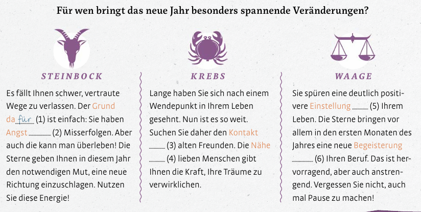
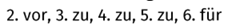

Saltar la navegación
Lesen Sie die Horoskope und ergänzen Sie.
zu - vor - zu - für - zu


Welche Präposition passt?.
1. Mein Partner und ich haben uns vor zwei Jahren getrennt. Heute ist meine Beziehung Rellenar huecos (1):JXUwMDIyJXUwMDBm (zu/bei) ihm viel besser als früher.
2. Ich habe viele gute Erinnerungen Rellenar huecos (2):JXUwMDM5JXUwMDBm (an/von) meine Schulzeit. Vielleicht möchte ich deshalb Lehrer werden.
3. Manchmal denke ich, ich habe keinen großen Einfluß Rellenar huecos (3):JXUwMDM5JXUwMDE0JXUwMDEz (für/auf) mein Leben. Kennst du das Gefühl?
4. Ich habe mich in meinem Beruf gelangweilt. Dann hat mein Chef mir die Teilnahme Rellenar huecos (4):JXUwMDM5JXUwMDBm (an/in) einer Fortbildung empfohlen.
5. Es gibt immer eine Chance Rellenar huecos (5):JXUwMDM5JXUwMDE0JXUwMDEz (auf/in) eine Änderung des Verhaltens. Das macht das Leben so spannend.
6. Oft habe ich Zweifel Rellenar huecos (6):JXUwMDM5JXUwMDBm (an/vor) meinen Fähigkeiten. Deshalb feue ich mich besonders, wenn meine Chefin mich lobt.
7. Warum machst du dir Sorgen Rellenar huecos (7):JXUwMDJkJXUwMDE4 (um/an) deine Zukunft? Du hast doch alles, was du brauchst.
Habilitar JavaScript
Creado con eXeLearning (Ventana nueva)